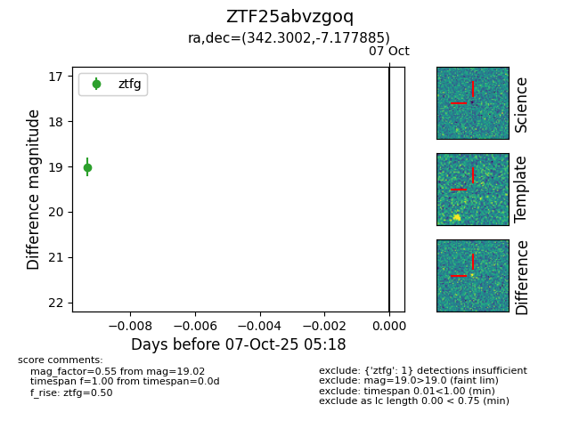

FINK: ZTF25abvzgoq
Lasair: ZTF25abvzgoq
ALeRCE: ZTF25abvzgoq
ZTF25abvzgoq (ztf,fink)
equatorial (ra, dec) = (342.3002,-7.17789)
galactic (l, b) = (61.8232,-54.81953)

last ztfg=19.02
1 ztfg detections